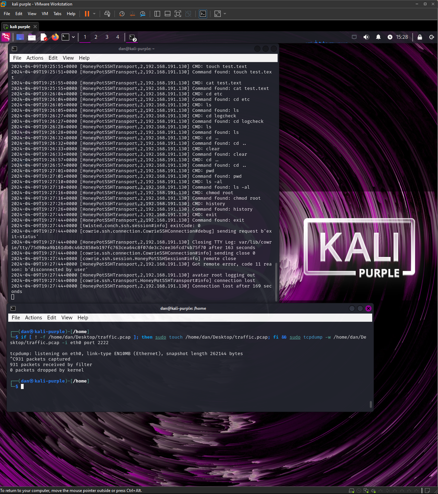
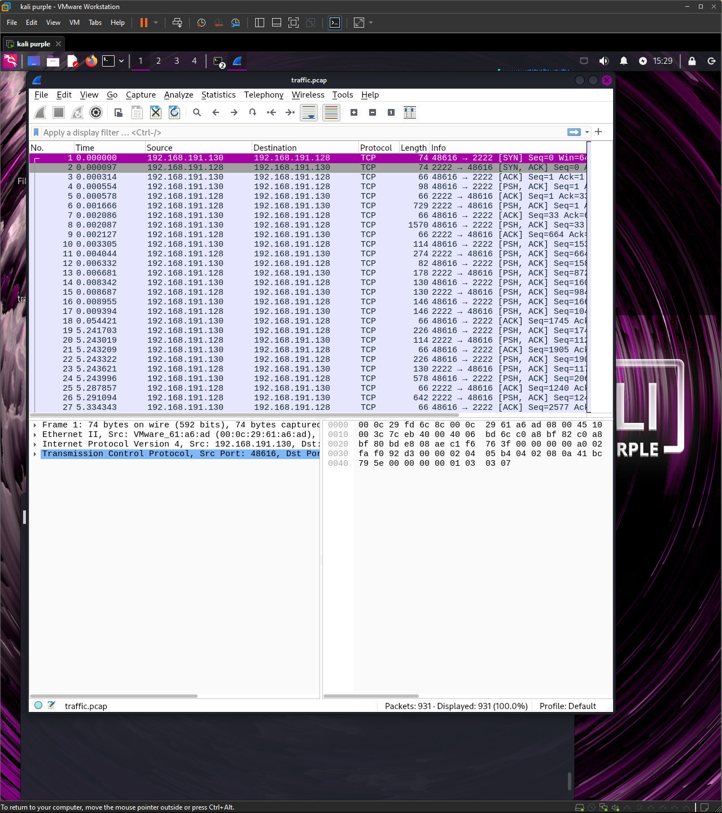

Steer Attackers Away With Honey
SOURCE CODE: https://github.com/cowrie/cowrie DOCUMENTATION: https://cowrie.readthedocs.io/en/latest/ AWESOME HONEYPOTS REPO: https://github.com/paralax/awesome-honeypots?tab=readme-ov-file#readmeWhat is a honeypot?
A honeypot is a sweet looking server, intended to lure attacks similar to how honey looks sweet to a bear. It is a tactic used by security professionals that can be left open or “locked down” with low efforts to allow an attacker to easily access it.
The intent is to draw attackers to this easy target so they can spend most of their resources and time trying to access this fake vulnerable network rather than the live network.
The honeypot can be used to detect, deflect, and be used to gather intelligence on an attacker, essentially a trap.
Two Types of Pots
There are two types of honeypots: an interactive and non-interactive.
An interactive honeypot is used to help administrators respond to incoming traffic to the honeypot while an non-interactive honeypot just gathers the information/traffic that is coming in from the attacker.
Both can have their own benefits depending on factors such as desired level of detail in attack analysis, maintenance, and level of risk available for an organization.
Creating Your own Honeypot
In the future, I want to mess around and configure and build my own honeypot. With a bit more knowledge, I want to be able to create one that can best suite my own needs in my home network. \
However, for now, I will be building one from the popular github repository in the beginning of this post: Cowrie.
Cowrie
Cowrie is a low interactive SSH honeypot that is designed to log any brute force attacks and the shell interaction performed by attackers.
It’s a Python-based system that emulates the services often targeted by attackers, SSH. The primary purpose of Cowrie is to gather intelligence about TTPs used by attackers, which can be analyzed to improve network defenses and security measures.
It can also be used to log commands that an attacker uses while they believe they are SSH’d into a host.
Setting Up Cowrie
To run the cowrie honeypot, I used the docker version to give it a quick run.
First I cloned the repository by using this command:
Once the repository is installed into my local computer, I ran this command to start the app:
This command is used in order to build the pot and should display a message at the end saying “ready to accept ssh connections” if ran properly. The commands read as a docker coontainer being ran to listen on port 2222 on the host machine to port 2222 inside the container using the -p flag. Lastly, it is reading from the imae created called cowrie/cowrie.
Threat/Attacker POV
In the attacker’s machine, they may typically first run a nmap scan in order to find any open ports that are visible on a network.
Since we have the cowrie honeypot running a ‘ssh’ on port 2222, it will be displayed when an attacker scans our local network. A typical nmap scan would look like this:
The scan helps show any open ports that are discoverable on a network, with the -Pn flag being used to discover any hosts regardless of their status and the -p flag to specify a specific port number and -sV to help with version detection during the scan.
The next step would most likely include the attacker attempting to SSH into the port found at the particular host. They would use a command similar to this:
The cowrie pot is configured to accept any password so when prompted, the attacker may enter any password and to their ‘surprise’ be able to successfully ssh as root.

POV from the Honeypot
While this is happening, the cowrie pot is quietly logging all information that is coming from the attacker’s machine.
Information including the time stamp, particular command, and even the output generated by the attacker’s actions. THis comprehensive logging enables security professionals to analyze the attacker’s behavior, identify attack patterns, and fortify defenses against similar incursions in the future.
With the incoming information, I was able to use the tcpdump tool to log all the incoming traffic from the attacker’s machine to the localhost by running this small script:

These captures can then be redirected to a text or pcap file which can be analyzed through log and traffic sniffing tools such as Wireshark.
